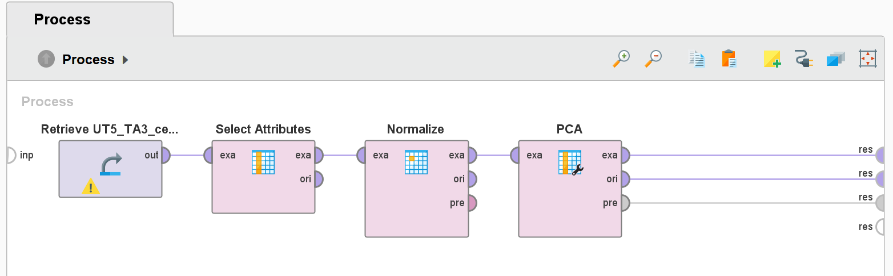

UT05_TA3
Nutritional Information on Breakfast Cereals
This dataset contains information on 77 types of cereals, including 13 numeric variables. The objective of this analysis is to reduce dimensionality using Principal Component Analysis (PCA) while retaining 95% of the variance in the data.
Process Steps
-
Data Preparation:
Removed non-numeric attributes ("Cereal name," "Manufacturer," and "Type") and normalized all numeric attributes to ensure consistency in scaling. -
Applying PCA:
Used the PCA operator with a variance threshold of 0.95. This reduced the dataset dimensions while retaining most of the variance.

Results
Eigenvalues:
The eigenvalues and corresponding variance explained by each principal component are shown in the table below:
- PC1: Explains 27.8% of the variance.
- PC2: Adds 24.1%, bringing cumulative variance to 51.9%.
- PC3: Adds 14.0%, with cumulative variance reaching 65.9%.
- PC4: Adds 8.2%, achieving 74.1% cumulative variance.
Cumulative Variance Plot
The cumulative variance plot shows that the first six components account for 87% of the total variance, indicating effective dimensionality reduction.
Key Insights
- The first three principal components contribute 65.9% of the variance, justifying a reduction from 13 attributes to 3 without significant information loss.
- Normalization ensures that attributes with large ranges (e.g., "Calories") don't dominate the PCA results.
- Dimensionality reduction significantly improves computational efficiency for machine learning algorithms.
Conclusion
Using PCA, we reduced 13 numerical predictors to the top 5 attributes most contributing to variance: "calories," "sodium," "potassium," "vitamins," and "rating." This reduction improves model efficiency and highlights the importance of preprocessing steps such as normalization.